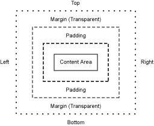

| LWUIT Developer’s Guide |
| C H A P T E R 8 |
The Style object sets colors, fonts, transparency, margin, padding, images, and borders to define the style for a given component. Each Component contains a selected Style Object and allows Style modification at runtime using component.getSelectedStyle() and component.getUnselectedStyle(). The style is also used in Theming (Chapter 10). When a Theme is changed, the Style objects are updated automatically.
Each Component has two adjustable colors:
| Foreground color | The component foreground color that usually refers to the component text color. For example, for a Button it's the text color. |
| Background color | The component background color. |
The color specification is RGB. There is no alpha channel within the color (the background transparency is separate).
Valid values are integers ranging from 0x000000 to 0xffffff (black to white respectively) or a decimal number.
Fonts are set with the Font object (see the Font API in the API documentation located in install‐dir/docs/api/lwuit. Lightweight UI Toolkit supports both for Bitmap fonts and for system fonts, similar to common MIDP fonts. Fonts are discussed in Chapter 11.
Lightweight UI Toolkit style supports background component transparency, to add flexibility and appeal to the UI. To set a component transparency level, call setBgTransparency and specify an integer or a byte. The integer value must range between 0 to 255, where 255 (the default) is opaque.
Margin and Padding are inspired by the CSS Box Model. Each component has a main content area (for example, text or icon) and optional surrounding padding and margin areas. The size of each area is specified by four integers that represent the top, bottom, left and right space (similar to component Insets terminology in SWING). The following diagram shows the placement of the areas in relation to the component content area:
Padding and margins can be set as follows:
// Setting padding with positive values setPadding(int top, int bottom, int left, int right) // orientation can be Component.TOP, BOTTOM, LEFT or RIGHT setPadding(int orientation, int gap) // Setting margin with positive values setMargin(int top, int bottom, int left, int right) // orientation can be Component.TOP, BOTTOM, LEFT or RIGHT setMargin(int orientation, int gap)
In Style, Images refer to a component background image. By default components do not have a background image, so the bgImage parameter is null by default. For more details about images, please refer to Chapter 11.
The Style object supports defining custom rendering of a border. There are several default built-in border types (see the Javadoc™ of the Border class). Borders can either replace the background painter (as is the case with round borders and sometimes with image borders) or they can be rendered after the component itself is rendered. A custom border can be built by deriving the Border class and overriding the appropriate methods.
A border is rendered into the padding area of the component so it is important that the component padding is large enough to contain the border drawing.
The Style listener gives you the ability to track changes in a certain component style object. For example you might want to monitor changes in the background color of a component, and react accordingly.
The following code shows how to add a listener and track any style property change to the Font.
myComponent.getStyle().addStyleListener(new StyleListener() {
public void styleChanged(String propertyName, Style source) {
if (propertyName.equals(Style.FONT)) {
System.out.println("Font of myComponent got changed.");
}
}
});Painters in Style refers to the component's background drawing. The Painter draws itself and then the component draws itself on top. For more information please refer to Chapter 7.
To set a painter, use the setBgPainter method. For example to set myPainter as the component background painter, write:
mycomponent.getStyle().setBgPainter(myPainter);
| LWUIT Developer’s Guide | 12-11-09 |
Copyright © 2009, Sun Microsystems, Inc. All rights reserved.